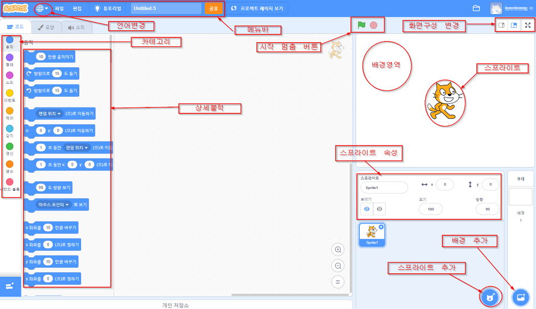

스크래치의 구성은 다음과 같습니다.

언어 설정 : 세계각국의 언어들로 언어를 변경할수 있다.
메뉴바 : 파일, 편집, 제목 정하기등의 기능이있는 칸 이다.
시작 멈춤 버튼 : 프로그램의 시작과 멈춤을 조정할수 있다.
화면 구성 버튼 : 화면을 전체화면, 프로젝트 실행결과 쪽을 크게, 또는 작게할수 있는 기능을 가지고 있다.
카테고리 : 총9가지 종류의 블록을 정리해 놓은 칸이다.
상세 블록 : 프로젝트를 짤수 있는 블록들이 있는 칸이다.
배경 영역 : 스프라이트가 움직이는 공간이다.
스프라이트 : 프로그램이 입력되면 실행되는 것이다.
스프라이트 속성 : 좌표, 방향, 이름등 스프라이트의 속성을 조정할수 있는 칸이다.
스프라이트 추가 : 스프라이트를 추가할수 있는 버튼이다.(컴퓨터에서 추가할수도 있고 직접그릴수도 있고 스크래치 내에 내장되있는 스프라이트를 사용할수도 있다.)
배경 추가 : 배경을 추가할수 있는 버튼이다.(컴퓨터에서 추가할수도 있고 직접그릴수도 있고 스크래치 내에 내장되있는 배경을 사용할수도 있다.)